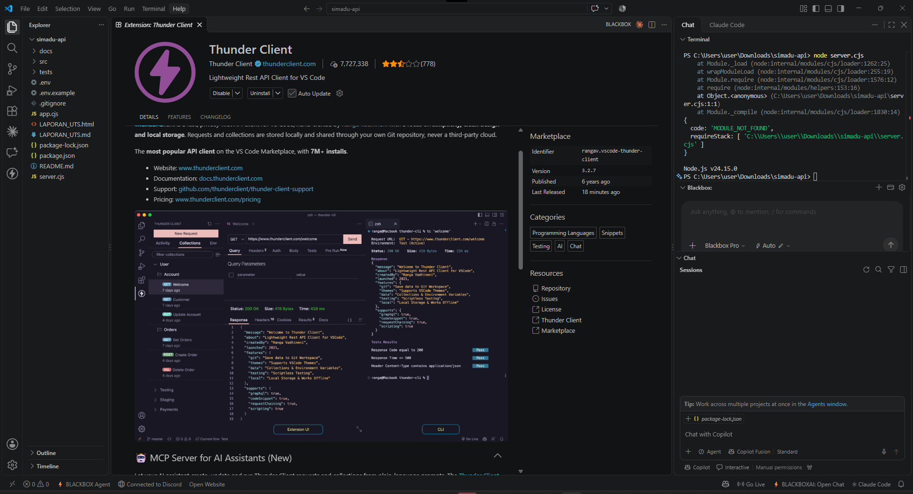
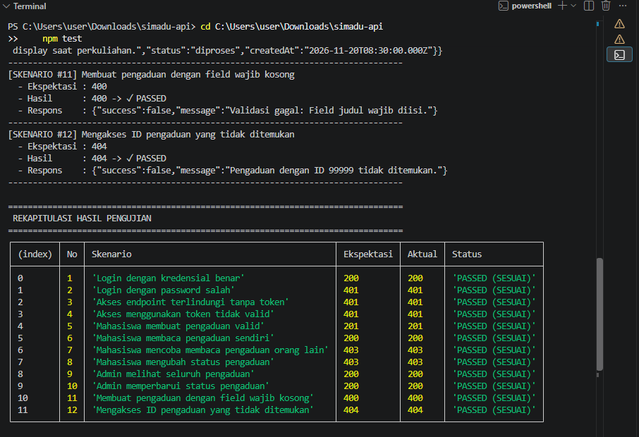
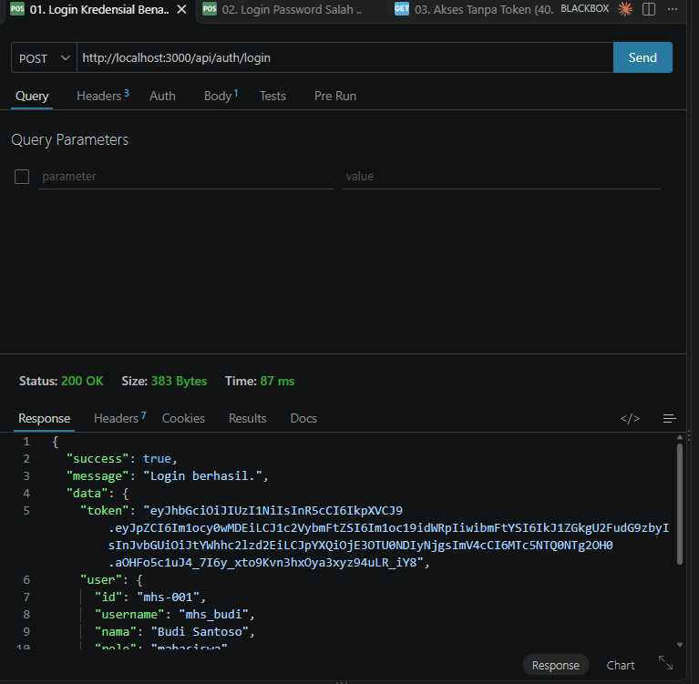
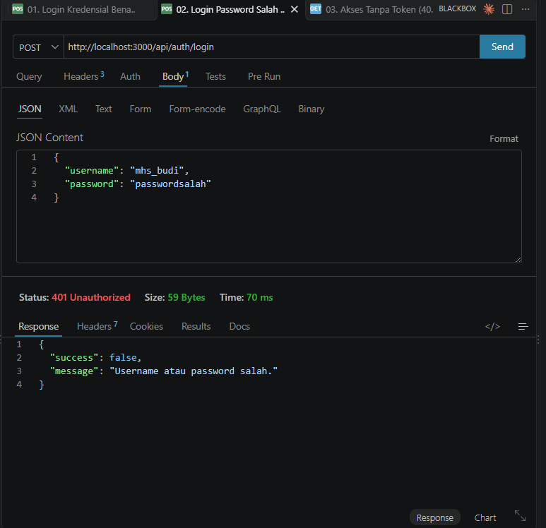
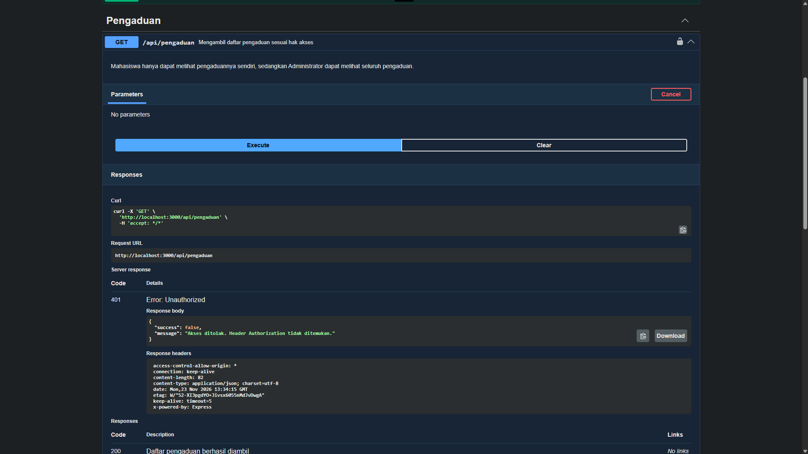
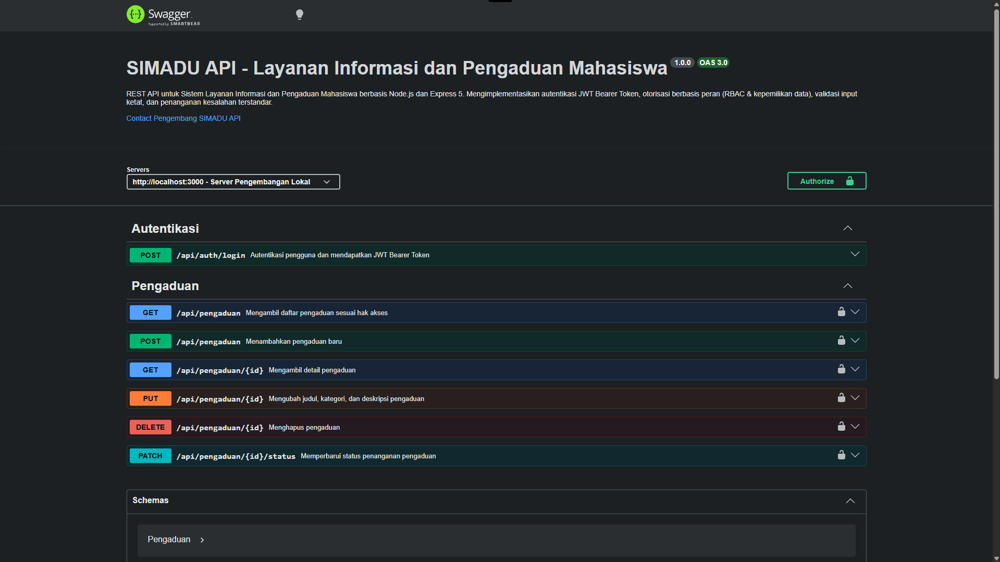

Merancang dan Membangun REST API yang Aman, Terstruktur, dan Dapat Dipertanggungjawabkan
mahasiswa): Dapat menyampaikan pengaduan baru, membaca pengaduan miliknya sendiri, serta mengubah atau menghapus pengaduan miliknya selama status penanganannya masih diajukan. Mahasiswa tidak boleh mengakses pengaduan milik orang lain dan tidak boleh mengubah status pengaduan.admin): Memantau dan membaca seluruh pengaduan mahasiswa di sistem serta memperbarui status penanganan (diajukan, diproses, selesai). Admin tidak diperkenankan membuat pengaduan mahasiswa atau mengubah isi deskripsi laporan.Resource utama pada SIMADU API adalah pengaduan dengan atribut sebagai berikut:
| Field | Tipe Data | Keterangan | Validasi & Aturan Bisnis |
|---|---|---|---|
id |
Integer | Identitas unik pengaduan | Auto-increment oleh server, read-only. |
mahasiswaId |
String | Identitas pemilik | Diambil otomatis dari token autentikasi (JWT). |
judul |
String | Judul ringkas pengaduan | Wajib diisi, non-empty string. |
kategori |
String | Kategori pengaduan | Wajib: Fasilitas, Akademik, atau TI. |
deskripsi |
String | Uraian lengkap kendala | Wajib diisi, non-empty string. |
status |
String | Status proses penanganan | Nilai valid: diajukan, diproses, selesai (default: diajukan). |
createdAt |
String | Waktu pembuatan | Format standar ISO 8601 UTC yang digenerate oleh server. |
| Metode | Endpoint | Request Body | Sukses | Gagal | Keterangan |
|---|---|---|---|---|---|
POST |
/api/auth/login |
{ "username", "password" } |
200 OK | 400, 401 | Autentikasi kredensial pengguna dan mengembalikan JWT token. |
GET |
/api/pengaduan |
(None) | 200 OK | 401 | Melihat daftar pengaduan (Mahasiswa: milik sendiri, Admin: semua). |
GET |
/api/pengaduan/:id |
(None) | 200 OK | 401, 403, 404 | Mengambil detail pengaduan (Mahasiswa dilarang melihat milik orang lain). |
POST |
/api/pengaduan |
{ "judul", "kategori", "deskripsi" } |
201 Created | 400, 401, 403 | Menambah pengaduan baru oleh mahasiswa (status awal diajukan). |
PUT |
/api/pengaduan/:id |
{ "judul", "kategori", "deskripsi" } |
200 OK | 400, 401, 403, 404 | Mengubah data pengaduan milik sendiri selama status masih diajukan. |
PATCH |
/api/pengaduan/:id/status |
{ "status" } |
200 OK | 400, 401, 403, 404 | Memperbarui status penanganan pengaduan (khusus Administrator). |
DELETE |
/api/pengaduan/:id |
(None) | 200 OK | 400, 401, 403, 404 | Menghapus pengaduan milik sendiri selama status masih diajukan. |
Sistem ini dirancang menggunakan Arsitektur Berlapis (Layered Architecture) untuk menjamin keterpisahan tugas (*Separation of Concerns*), kemudahan pengujian, dan modularitas kode.
simadu-api/
├── src/
│ ├── routes/ # Menentukan rute URL dan HTTP verbs
│ ├── controllers/ # Menangani request HTTP, parameter, dan HTTP response
│ ├── services/ # Logika bisnis, aturan kepemilikan dan status data
│ ├── repositories/ # Abstraksi data store (User dan Pengaduan)
│ └── middleware/ # JWT verify, role check (RBAC), validator, error handler
├── docs/
│ └── openapi.json # Kontrak antarmuka OpenAPI 3.0 / Swagger UI
├── tests/
│ ├── test-runner.cjs # Otomasi pengujian 12 skenario
│ └── simadu_api.postman_collection.json # File koleksi Postman
├── app.cjs # Inisialisasi Express & routing
├── server.cjs # Server entry point
├── package.json
└── README.md

bcryptjs (salt rounds = 10) saat sistem diinisialisasi. Password plaintext tidak pernah disimpan.Authorization: Bearer <token>.requireRole.mahasiswaId pada pengaduan dicocokkan dengan req.user.id dari token. Pelanggaran akses menghasilkan kode 403 Forbidden.id, status) langsung ditolak dengan kode 400 Bad Request. Seluruh error diproses oleh Global Error Handler tanpa membocorkan stack trace.Pengujian dilakukan secara otomatis menggunakan skrip npm test (skrip tests/test-runner.cjs) dan diverifikasi melalui Postman / HTTP Client. Seluruh 12 skenario berhasil memenuhi ekspektasi:

| No | Skenario Pengujian | Metode & Endpoint | Ekspektasi | Hasil Aktual | Status |
|---|---|---|---|---|---|
| 1 | Login dengan kredensial benar | POST /api/auth/login |
200, Token diterima | 200 OK | PASSED |
| 2 | Login dengan password salah | POST /api/auth/login |
401 | 401 Unauthorized | PASSED |
| 3 | Akses endpoint terlindungi tanpa token | GET /api/pengaduan |
401 | 401 Unauthorized | PASSED |
| 4 | Akses menggunakan token tidak valid | GET /api/pengaduan |
401 | 401 Unauthorized | PASSED |
| 5 | Mahasiswa membuat pengaduan valid | POST /api/pengaduan |
201 | 201 Created | PASSED |
| 6 | Mahasiswa membaca pengaduan sendiri | GET /api/pengaduan/1 |
200 | 200 OK | PASSED |
| 7 | Mahasiswa mencoba membaca pengaduan orang lain | GET /api/pengaduan/3 |
403 | 403 Forbidden | PASSED |
| 8 | Mahasiswa mengubah status pengaduan | PATCH /api/pengaduan/1/status |
403 | 403 Forbidden | PASSED |
| 9 | Admin melihat seluruh pengaduan | GET /api/pengaduan |
200 | 200 OK | PASSED |
| 10 | Admin memperbarui status pengaduan | PATCH /api/pengaduan/1/status |
200 | 200 OK | PASSED |
| 11 | Membuat pengaduan dengan field wajib kosong | POST /api/pengaduan |
400 | 400 Bad Request | PASSED |
| 12 | Mengakses ID pengaduan yang tidak ditemukan | GET /api/pengaduan/99999 |
404 | 404 Not Found | PASSED |



SIMADU API dilengkapi dokumentasi interaktif yang dapat dibuka langsung di peramban web pada alamat http://localhost:3000/api-docs. Dokumentasi ini mencakup skema request, response, status code, dan otorisasi Bearer Token interaktif.

Autentikasi (Authentication) adalah proses membuktikan identitas pengguna ("Siapa Anda?"), misalnya memeriksa apakah username dan password yang dimasukkan cocok. Di dalam kode proyek ini, autentikasi ditangani oleh auth.service.cjs (login) dan middleware authenticateToken di auth.middleware.cjs yang memvalidasi keaslian JWT token.
Otorisasi (Authorization) adalah proses menentukan apakah pengguna yang sudah terautentikasi memiliki izin untuk melakukan aksi atau mengakses resource tertentu ("Apa yang boleh Anda lakukan?"). Di dalam kode, otorisasi ditangani oleh middleware requireRole dan pemeriksaan di pengaduan.service.cjs (misalnya memeriksa apakah mahasiswa adalah pemilik sah dari pengaduan yang hendak diubah).
Karena sistem menerapkan prinsip Principle of Least Privilege dan kontrol akses berbasis peran (RBAC) serta pembatasan kepemilikan data (Data Ownership). Mahasiswa hanya berhak mengelola data miliknya sendiri. Mengizinkan mahasiswa mengakses semua endpoint akan membuka celah keamanan serius di mana mahasiswa bisa mengubah status pengaduan (wewenang admin) atau melihat pengaduan rahasia milik mahasiswa lain.
HTTP 401 Unauthorized (Unauthenticated): Klien belum terotentikasi. Token tidak disertakan, formatnya salah, atau sudah kedaluwarsa. Klien harus melakukan autentikasi (login) terlebih dahulu.
HTTP 403 Forbidden (Unauthorized): Klien sudah terautentikasi dan identitasnya sah, namun peran atau izin pengguna tersebut tidak mencukupi untuk melakukan tindakan yang diminta. Melakukan request ulang dengan kredensial yang sama tetap akan ditolak.
API tidak mempercayai ID pemilik yang dikirim melalui request body oleh client. Sebaliknya, API mengambil identitas mahasiswa yang sah (user.id) langsung dari JWT token yang telah diverifikasi di server. Saat operasi update dilakukan pada pengaduan.service.cjs, sistem mengambil data pengaduan dari repository dan melakukan verifikasi:
if (pengaduan.mahasiswaId !== user.id) throw 403;. Jika ID pengguna tidak sama dengan ID pemilik pengaduan di data store, request langsung ditolak dengan status 403 Forbidden.
Password harus di-hash: Karena jika database atau penyimpanan server mengalami kebocoran data (data breach), penyerang tidak dapat membaca kata sandi asli pengguna karena hashing bekerja satu arah dengan salt acak.
Token tidak boleh dicatat ke log: Karena Bearer Token bekerja sebagai kunci akses aktif yang dapat digunakan siapa saja yang memegangnya. Jika token tercatat di access log teks terbuka, siapa pun yang memiliki akses ke log (administrator log, sistem monitoring) dapat mencuri token tersebut dan menyamar sebagai pengguna (*impersonation/replay attack*).
Input diverifikasi oleh validator.middleware.cjs sebelum mencapai controller. Jika ada field yang kosong, tipe data salah, atau ada field terlarang (seperti client mencoba menyuntikkan field status atau id), middleware langsung menghentikan aliran request dan mengembalikan HTTP 400 Bad Request beserta pesan detail. Jika terjadi error di level controller/service, error dilempar menggunakan next(error) dan diproses secara seragam oleh error.middleware.cjs tanpa memaparkan stack trace sensitif ke pengguna.
HTTPS (TLS) mengamankan saluran pipa komunikasi di transport layer melalui enkripsi data, mencegah intersepsi atau penyadapan jaringan oleh penyerang (*Man-in-the-Middle*).
Bearer Token bekerja pada application layer (HTTP) sebagai tiket verifikasi identitas pengguna ke server.
Hubungan: Bearer Token mutlak membutuhkan HTTPS; jika dikirimkan melalui HTTP biasa, token tersebut dapat disadap dengan mudah oleh pihak lain di jaringan Wi-Fi/publik.
Dengan melakukan State Verification Test: Kita memeriksa dan mencatat data pengaduan menggunakan GET /api/pengaduan/:id terlebih dahulu. Kemudian kita mengirimkan request yang melanggar aturan (misalnya update dengan body tidak valid atau update dari akun yang tidak berhak) dan memverifikasi bahwa server mengembalikan kode error 400/403. Terakhir, kita lakukan GET sekali lagi pada ID pengaduan tersebut untuk membuktikan bahwa nilai atribut pada server tetap persis sama seperti sebelum request ilegal dikirimkan.
Karena halaman Swagger UI hanya merender file kontrak spesifikasi antarmuka (schema UI) secara statis di peramban. Tampilnya halaman Swagger tidak membuktikan bahwa logika bisnis backend berjalan, tidak membuktikan bahwa database terhubung dengan baik, dan tidak membuktikan bahwa mekanisme otorisasi atau penanganan skenario negatif benar-benar berfungsi di server. Pembuktian fungsional hanya bisa diverifikasi dengan eksekusi request nyata ke endpoint.
express-rate-limit) terutama pada endpoint login.HttpOnly Secure Cookie.